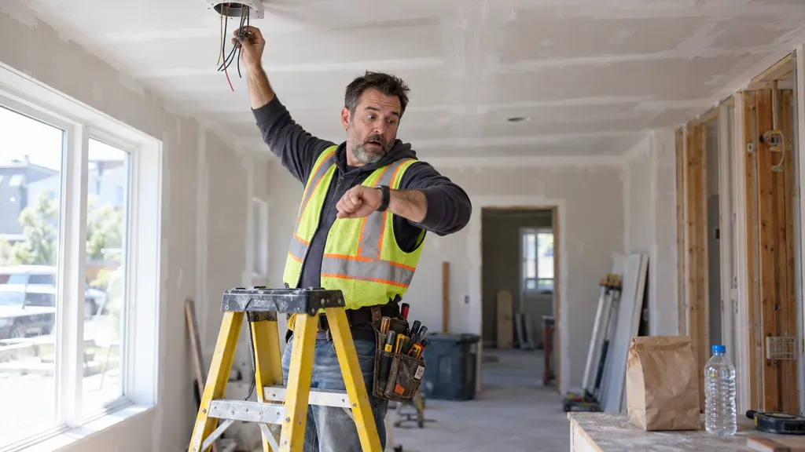
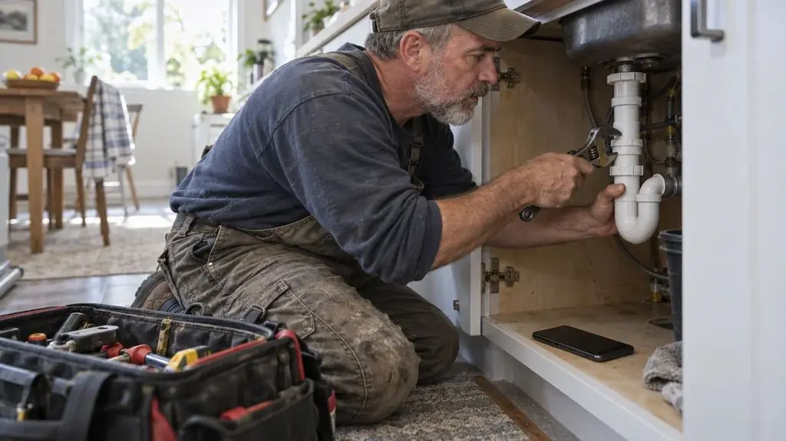

Your Workday Is Busy Enough. Tracking It Shouldn't Be.
Different job sites. Changing schedules. Hours to remember. Miles to record. When you're busy getting work done, the details are easy to forget. Jobday helps you keep those details organized as your day unfolds.
- Friday, 4:50 PM · in the truck
It logged my arrival at 7:30. I didn't have to remember.
Today · arrivalsArrivals are logged when you get to a site, with location on. Edit a time and the original GPS time stays on record. - Between job 2 and job 3
Every minute and every mile of the drive is on my day.
Today · drive and milesDrive time and miles are part of the day, site to site. Time is worked out with current traffic, so you know when to leave. 
2:40 PM · still no lunchMy phone nudged me, so I took my lunch on time.
Break reminders · freeA reminder before the window closes, timed to your shift. No Pro needed.- Friday night · at the kitchen table
My week added itself up, and one tap exports it for payroll.
Work log · exportHours add up per day and per week as you go. Fix what's off, then export the week as a CSV for Excel or payroll, with hours, breaks, drive time, miles and GPS times PRO.
Made for a day that keeps changing.
Google Maps in one tap
Open the route to your next site in Google Maps right from the app.
Drive time, traffic and miles
Estimated time on the road between sites, with current traffic, the miles for every day, and when to head out so you are not late.
Change the day on the go
Add a job or move one in the middle of the shift. The times re-lay out around it.
Breaks, not just lunch
Reminders for rest breaks and meal breaks, timed to your shift. Free.
Say it, don't type it
Talk through what you did at the site and Jobday saves it as a voice report, with your site photos.
Export your hours PRO
Send a week, two weeks or any dates as a CSV for Excel: times in and out, breaks, drive minutes, miles and GPS times.
One App. Your Entire Workday.
Add your sites
Jobday lays out the day in order, with drive time and when to leave home.
Go to work
Arrivals, breaks and departures land on today's timeline as the day goes.
See the day add up
Hours, drive time and breaks in one card when the shift ends.
See the whole month
Hours for every day in Planner, with days to review marked. Tap a day to edit it.
Your day on the Home Screen
A medium widget draws the day as a line: your sites as big dots with arrival times, filling in as the day goes. Leave time, drive and arrival sit on top, the status at the bottom.
- When to leave this site and when you arrive at the next
- Where you are in the day, without opening the app
- A flag if an arrival was not recorded
Add it to your Home Screen, or keep it one swipe away in Today View.
Built for the People Who Keep Work Moving.
Whether you work for a company, work for yourself, or run a small service business, your day deserves a better way to stay organized.
- For employees
Keep Your Own Work Records.
Your schedule can change. Your job sites can change. Your personal work history shouldn't depend on memory. Use Jobday to keep track of your hours, job visits, and travel.
Your workday, recorded your way. - For independent contractors
Focus on the Job. Not the Paperwork.
Manage your appointments, document your work time, and keep mileage records together. Spend less time reconstructing your week and more time doing the work that matters.
More work. Less paperwork. - For small business owners
Stay Organized While Running Your Business.
When you're both running the business and working in the field, every hour counts. Keep your own schedule, site visits, hours, and travel records organized without adding unnecessary complexity.
Run your day with more clarity.
Example scenarios by trade Illustrations, not customer reviews
- HVAC technicians
I know exactly when to leave, so I'm never late to the next call.
- Electricians
A job moves or a new call comes in, I change the day and see the new times right away.
- Cleaners
One tap and Google Maps is already routing me to the next home.

PlumbersHands full under the sink, so I just talk. It's saved as my voice report.
- Appliance repair
It reminds me to take every break, not only lunch.
- Handyman
I choose how drive time counts, and I see my estimated hours as the day unfolds.
Made by seasoned pros from the field, for HVAC technicians, electricians, plumbers, installers, maintenance professionals, independent contractors, and other field service specialists.
Your Workday. Your Data.
Your work history is personal. Jobday is designed to help you keep control of it.
- No account required to get started.
- No ads.
- Your work records are stored primarily on your device.
- Location-based features help identify job visits without requiring a continuous GPS route log.
- You control your phone's location permissions.
- We don't sell your personal data.
Map and drive-time requests use outside services, and usage analytics can be turned off in Settings. Learn about privacy
Start Free. Upgrade When You Need More.
Get started with the essential tools for planning and tracking your workday. Unlock expanded history and recordkeeping features with Pro.
Jobday Free $0
- Plan jobs and site visits
- Track work hours, with overtime and PTO
- Break reminders
- Daily work records, history for this week and last
Jobday Pro
Keep the Full Picture of Every Workday. Full history, exportable records, and more ways to document your jobs.
30 days free, then $4.99/month or $34.99/year. Save about 42% with annual billing compared with 12 monthly payments.
- Full work history and CSV export
- Choose how drive time counts in your records
- Unlimited job photos and voice notes
- Everything in Free
Subscription automatically renews unless canceled. Manage or cancel through your App Store or Google Play subscription settings. Trial eligibility and final terms are shown before purchase.
Frequently Asked Questions
Who is Jobday for?
Jobday is designed for people who work at different locations, including employees, independent contractors, and owner-operators of small service businesses.
Do I need an account?
No. You can get started without creating an account.
Does Jobday track my location all day?
Jobday uses location-based features to help identify visits to job sites. It is not designed as a continuous route-history tracker. Location accuracy and background behavior depend on your device and permissions.
Can I review or correct my work records?
Yes. Jobday lets you review and adjust supported entries so your records reflect your actual working day.
Can I use Jobday to track mileage?
Yes. Jobday includes mileage and travel-time tracking for work-related trips.
Does Jobday replace my employer's timesheet system?
Not necessarily. Jobday is a personal workday recordkeeping tool. Your employer may require its own timekeeping system, and applicable policies determine how working time and mileage are treated.
Can I track my employees with Jobday?
Jobday currently focuses on individual workday management. Team management features are not included in the current individual offering.
Is Jobday free?
Yes. Jobday offers a free version and an optional Pro subscription with additional features.
Can I cancel Pro?
Yes. Subscriptions can be managed or canceled through the store where you purchased them. Cancellation generally takes effect at the end of the applicable billing period.
Make Every Workday Easier to Manage.
Your jobs, hours, miles, and work records, all in one place. Built for real work. Designed for real workdays.